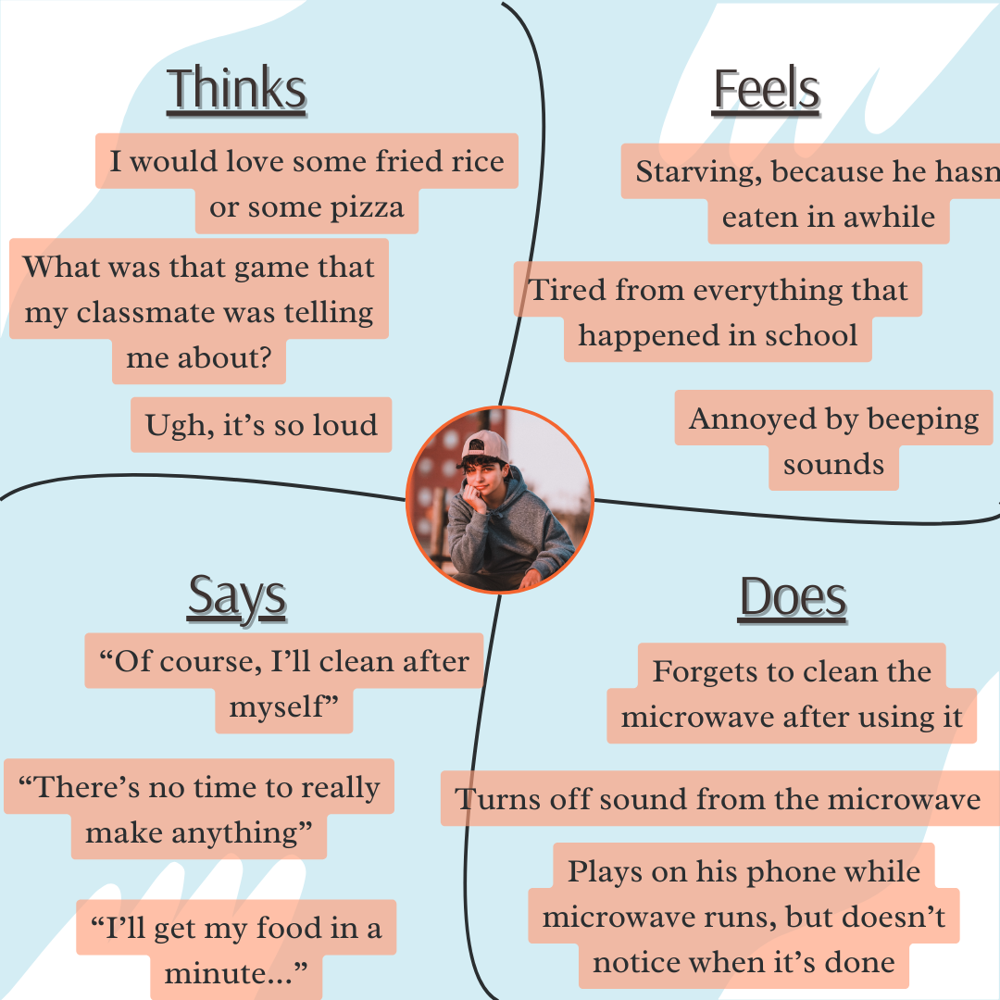

Personas and Storyboarding
Introduction
This webpage focuses on the journey that I had in understanding how to observe and interview potential user with the end goal of having information that would aid me in making personas and storyboards. It's an important skill that will improve my own iterative design process.
Part 1: Preparation
I've chosen to observe and prepare an interview for those that use a microwave. I prepped by making a list of interview questions to understand their microwave use. I especially wanted to understand the things the things they may not immediately think about when it comes to using a microwave. For example, the cleaning or uses that don't include heating up food.
Interview Questions
- Why do you use this appliance?
- When do you use the microwave for non-food related reasons? How often?
- How often do you use this appliance?
- What do you remember from the last time this appliance didn’t work?
- How likely are you to use this appliance instead of another that could do the same job?
- What has frustrated you about this appliance?
- Are there times where you decide not to heat anything, because you have to use this appliance?
- How often is the microwave cleaned?
- Is there anything that others may think is unique about how you use this appliance?
I learned that order of questions matter! And that I can be better at asking clearer questions!
Sketch
A user may need to heat something up. To solve this problem they will use a microwave. They connect the cord to a 3-prong outlet. Then they open the microwave using the handle and place their item inside. A user will push buttons to set a certain time to heat things up, which can be seen using the timer. They can look through the window to see their item as it heats.
Part 2: Recording Observations
I observed and interviewed three people for the microwave. Below are a few of my findings:
Person 1
- Stood by the microwave while waiting for the food to cook
- Cleans microwave once a week
- Uses the microwave 1-2 times
- Uses the microwave to disinfect sponges and rags
- Doesn't like the change in texture caused by the microwave
- Has no idea how to fix the microwave when switched to a different mode
- Uses the microwave to defrost and warm food
- Looks for item to warm and then opens the microwave
Person 2
- Moved around the kitchen and did a few things while waiting for the microwave
- Cleans microwave once a month
- Turns off the sound of the microwave
- Is annoyed by the beeping of the microwave
- Uses the microwave 3 times a week
- Opens the microwave, and then looks for item to heat up
- Adds time to microwave in 30 second increments
- Convenience is priority
- Presses the cancel button very quickly
Person 3
- Doesn't check the packaging for how much time to put into microwave
- Goes on phone while waiting for the microwave
- Uses microwave about 2 times a day
- Speed is priority
- Opens microwave before knowing what to eat
- Opens the microwave instead of looking through window to see the food
Part 3: Personas
I've made two personas to delve deeper into knowing who is the person that is using these products.
Retired Renee
Restless Ron
Part 4: Storyboarding
Storyboarding is a great way to understand the process by which a persona may interact with a product. In the following storyboard, I've decided to follow Ron to see how he uses a microwave.